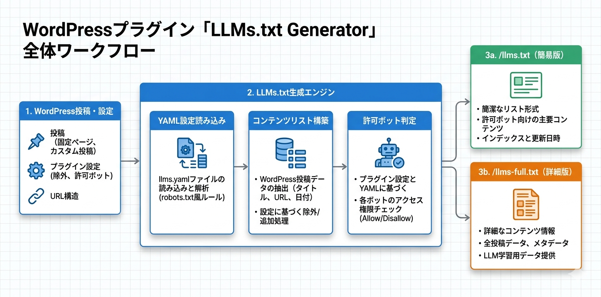

Kashiwazaki SEO LLMs.txt Generator マニュアル

Kashiwazaki SEO LLMs.txt Generator は、AIクローラー向けの llms.txt（概要版）と llms-full.txt（詳細版）を動的に生成するWordPressプラグインです。YAMLヘッダーによるライセンス・レート制限・リトライポリシー・許可ボットリストの設定が可能で、AIクローラーのアクセスを適切にコントロールします。
llms.txtは、AI検索エンジン（ChatGPT、Gemini、Perplexity等）にサイトの情報を効率的に提供するための新しい標準フォーマットです。本プラグインはWordPressの投稿データからllms.txtとllms-full.txtを動的に生成し、AIクローラーへの情報提供を最適化します。
主な機能
LLMs.txt生成
AIクローラー向けのllms.txtとllms-full.txtを動的に生成
YAML設定
ライセンス・レート制限・リトライポリシー・許可ボットリストを設定
コンテンツ制御
投稿タイプごとの含有設定とキャッシュ管理機能
プラグインの特長
- llms.txt（概要版）と llms-full.txt（詳細版）を動的に生成
- YAMLヘッダーでライセンス、レート制限、リトライポリシーを設定可能
- 許可ボットリストによるAIサービスごとのアクセス制御
- リライトルールにより
/llms.txtと/llms-full.txtのエンドポイントを自動生成 - 3つのAJAXハンドラーによる管理画面からの設定操作
<link rel="alternate">メタタグをHTMLヘッドに自動出力- 投稿タイプごとにllms.txtへの含有・除外を設定可能
- 管理画面1ページで全設定を一元管理

SEO・GEO（生成AI最適化）への効果
llms.txt：AIクローラー向けの新しい標準
llms.txt は、robots.txt がWebクローラー向けの指示ファイルであるのと同様に、LLM（大規模言語モデル）向けのサイト情報・指示ファイルとして策定が進む新しい標準です。サイトの概要、コンテンツ構造、利用条件をAIが読み取りやすい形式で提供することで、AIによるコンテンツの正確な理解と適切な引用を促進します。
レート制限によるサーバー保護
AIクローラーによる過剰なアクセスはサーバーに大きな負荷を与える可能性があります。YAMLヘッダーのレート制限設定により、AIクローラーのリクエスト頻度を制御し、サーバーの安定性を維持しながらAIクローラーへのコンテンツ提供を両立できます。
許可ボットリストによるアクセス制御
すべてのAIサービスに同一のアクセスを許可するのではなく、許可ボットリストにより信頼できるAIサービスのみにコンテンツアクセスを許可できます。これにより、コンテンツの不正利用リスクを低減し、適切なAIサービスとの連携を実現します。
link rel="alternate" によるAIファイルの発見性向上
本プラグインはHTMLヘッドに <link rel="alternate"> タグを出力し、検索エンジンやAIクローラーが llms.txt ファイルを容易に発見できるようにします。これにより、SEO観点ではクローラーがサイトのAI向け情報を効率的に取得でき、GEO観点ではAIがコンテンツの構造と利用条件を正確に把握できます。
目次（マニュアル構成）
| ページ | 内容 |
|---|---|
| 概要 | プラグインの機能概要、SEO/GEO効果、動作要件 |
| インストール・初期設定 | インストール手順、基本設定、リライトルールの確認 |
| 詳細設定 | YAMLヘッダー、レート制限、許可ボットリスト、コンテンツ含有設定 |
| トラブルシューティング | よくある問題と対処法、動作要件、技術仕様、アーキテクチャ |
動作要件
| 項目 | 要件 |
|---|---|
| WordPress | 5.0 以上 |
| PHP | 7.4 以上 |
| 対応ブラウザ | Chrome、Firefox、Safari、Edge（最新版） |
インストール後すぐに使い始めたい場合は、インストール・初期設定ページに進んでください。